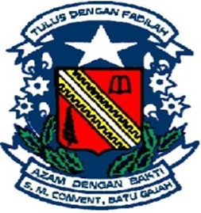
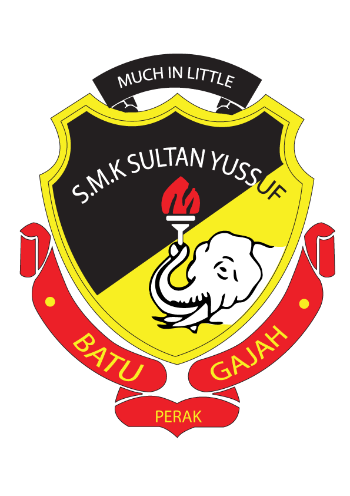

YEAR: 2006 - 2011
INSTITUTION: SK. ST. BERNADETTE'S CONVENT, BATU GAJAH, PERAK
LEVEL: UJIAN PENILAIAN SEKOLAH RENDAH (UPSR)
SECONDARY SCHOOL

YEAR: 2012 - 2016
INSTITUTION: SMK ST. BERNADETTE'S CONVENT, BATU GAJAH, PERAK
LEVEL: PENTAKSIRAN TINGKATAN TIGA (PT3) & SIJIL PELAJARAN MALAYSIA (SPM)
PRE-UNIVERSITY

YEAR: 2018 - 2019
INSTITUTION: SMK SULTAN YUSSUF, BATU GAJAH, PERAK
LEVEL: SIJIL TERTINGGI PELAJARAN MALAYSIA (STPM)
UNIVERSITY
YEAR: 2020 - 2022
INSTITUTION: UNIVERSITI TEKNOLOGI MARA (UiTM), CAWANGAN KELANTAN, KAMPUS MACHANG KELANTAN
LEVEL: BACHELOR OF OFFICE SYSTEMS MANAGEMENT (HONS.)
Thank you for spending your time to read my personal website :)